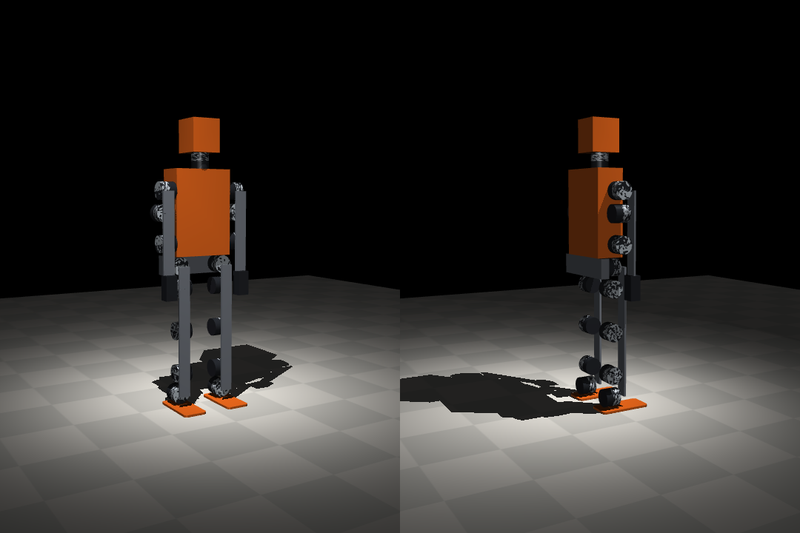

Navitek · N2 · concept · 9 novembre 2026
Un humanoïde d'un mètre, dont les actionneurs s'impriment.
N2 est encore un concept : un actionneur à réducteur cycloïdal imprimé et une jambe de cinq actionneurs, puis le robot entier, dessinés en CAO, avec le couple de chaque articulation tiré d'une simulation. Rien n'est imprimé, et aucun calcul de résistance n'est fait : la page dit ce qu'on sait et ce qu'on ne sait pas.
Un concept : dessiné, contrôlé en collisions, simulé. Pas imprimé. Pas dimensionné en résistance.
Les deux disques engrènent sur les 17 goupilles sans mordre (volume de morsure sous 0,5 mm³) · aucune collision entre les cinq actionneurs · deux simulations : le robot de N1 agrandi, puis le robot entier tiré de la CAO.
Ce qui existe déjà à cette échelle
Recherche en ligne le 8 novembre 2026 · cahier R-039
À un mètre, le seul projet ouvert que nous ayons trouvé qui imprime ses actionneurs est le Berkeley Humanoid Lite (Chi et al., RSS 2025) : 22 réducteurs cycloïdaux imprimés sur un plateau de 200 mm, pour moins de 5 000 $ US au total, environ 133 $ l'actionneur au plus bas. Sa taille est donnée à environ un mètre et 16 kg par un article, 80 cm par un autre : nous ne l'avons pas vérifiée dans l'article. Les autres : l'Unitree R1 (1,21 m, 4 900 à 5 900 $, fermé), Poppy (83 à 85 cm, servos Dynamixel du commerce), K-Scale (Z-Bot de 40 à 46 cm, K-Bot de 1,4 m à 8 999 $).
L'actionneur
Réducteur cycloïdal 16:1 · boîtier de 72 mm · tient sur un plateau de 200 mm
Un moteur sans balais fait tourner un arbre à deux excentriques à 180°. Deux disques à 16 lobes, excentrés de 1,2 mm, roulent dans 17 goupilles d'acier logées dans le boîtier ; à chaque tour du moteur, ils avancent d'un lobe. Six axes les relient à la bride de sortie. Seuls le boîtier, la bride et les disques sont imprimés (76 g et 4 h 15 par actionneur) ; le moteur, les roulements, les goupilles, la visserie et l'électronique sont du commerce.
| Pièce imprimée | Qté (jambe) | Taille (mm) | Temps | PLA | |
|---|---|---|---|---|---|
| Boîtierporte 17 goupilles d'acier dans ses gorges ; se visse au moteur par 6 vis M3 | 5 | 72 × 72 × 36 | 2 h 11 | 41,2 g | STL |
| Bride de sortiereçoit les 6 axes qui traversent les disques ; se visse à la platine | 5 | 66 × 66 × 30 | 1 h 05 | 17,4 g | STL |
| Disque cycloïdal A16 lobes ; engrène sur les 17 goupilles ; excentré de +1,2 mm | 5 | 51,5 × 51,5 × 8 | 30 min | 8,5 g | STL |
| Disque cycloïdal Bmême profil tourné d'un demi-pas ; excentré de −1,2 mm | 5 | 52,4 × 52,4 × 8 | 30 min | 8,5 g | STL |
| Platine de cuisserelie les axes du genou et de la hanche | 1 | 8 × 44 × 160 | 2 h 08 | 36 g | STL |
| Platine de tibiarelie les axes de la cheville et du genou | 1 | 8 × 44 × 160 | 2 h 08 | 36 g | STL |
| Platine de liaisonrelie les deux axes d'une paire de hanche ou de cheville | 2 | 8 × 44 × 80 | 1 h 04 | 18,2 g | STL |
| Piedse visse sur la cheville-roulis | 1 | 190 × 90 × 10 | 2 h 54 | 71,3 g | STL |
Le couple que la marche demande
Simulation à l'échelle · couple moyen / pic en N·m, jambe gauche · cahiers R-040 et R-056
Le modèle est le robot de N1 (sa version 1, du 8 novembre) agrandi à un mètre (14,7 kg, dont 550 g estimés par actionneur), avec des actionneurs sans limite de couple : on mesure ce que le mouvement demande. La même marche à quinze réglages que pour N1 a été cherchée trois fois sans plafond, puis avec un plafond de 55 N·m, puis de 18 N·m. Aucune marche ne tombe. Ces marches sont refaites, le 9 novembre, sur le modèle corrigé : deux erreurs de N1 (la cheville de côté commandée à l'envers, cahier R-052 ; le côté droit qui faisait le geste inverse du gauche, ERREURS E29) faussaient les précédentes, qui avançaient de 28 à 127 cm et demandaient jusqu'à 135 N·m à la hanche de côté (cahier R-056).
| Série | Graine | Avance, 12 s | Hanche, côté | Hanche, avant | Genou | Cheville, avant | Cheville, côté |
|---|---|---|---|---|---|---|---|
| sans plafond | 1 | 139 cm | 6 / 16 | 11 / 34 | 8 / 22 | 11 / 60 | 6 / 27 |
| sans plafond | 2 | 131 cm | 3 / 7 | 5 / 13 | 6 / 16 | 5 / 23 | 3 / 17 |
| sans plafond | 3 | 99 cm | 4 / 8 | 4 / 12 | 5 / 13 | 6 / 32 | 2 / 17 |
| plafond 55 N·m | 1 | 95 cm | 2 / 9 | 2 / 11 | 3 / 13 | 6 / 55 | 3 / 21 |
| plafond 55 N·m | 2 | 86 cm | 4 / 13 | 6 / 24 | 5 / 17 | 6 / 43 | 2 / 21 |
| plafond 55 N·m | 3 | 103 cm | 6 / 15 | 4 / 13 | 5 / 18 | 6 / 55 | 3 / 29 |
| plafond 18 N·m | 1 | 139 cm | 3 / 8 | 4 / 12 | 5 / 17 | 7 / 18 | 2 / 10 |
| plafond 18 N·m | 2 | 113 cm | 2 / 8 | 16 / 18 | 7 / 15 | 6 / 18 | 2 / 7 |
| plafond 18 N·m | 3 | 196 cm | 6 / 16 | 10 / 18 | 11 / 18 | 7 / 18 | 3 / 15 |
Les bras demandent au plus 4,1 N·m et le cou 0,2 N·m. Accroupi sur deux jambes à 90° de genou : le genou demande 5 N·m en moyenne, 8,4 au pic. Modèle simplifié ; masses d'actionneur et d'électronique estimées ; marches réglées sur le modèle lui-même.
Ce que ça dit du réducteur imprimé
- Ce qu'on a trouvé sur les réducteurs imprimés.3,43 N·m mesurés comme couple de service pour un 13:1 amateur ; 18,3 N·m au maximum pour un disque de PLA 24:1 (taille inconnue) ; 55 N·m de pointe pour un 20:1 du projet OpenCycloid. Ce sont des chiffres de sources différentes, de tailles différentes, qu'on ne peut pas comparer au nôtre.
- Les bras et le coudemandent au plus 4,1 N·m : à portée d'un réducteur imprimé.
- Les articulations les plus chargées.La cheville d'avant, 5 à 11 N·m en moyenne et 18 à 60 au pic ; la hanche d'avant, 2 à 16 N·m en moyenne et 11 à 34 au pic ; la cheville de côté, 2 à 6 N·m en moyenne et 7 à 29 au pic ; le genou, 3 à 11 N·m en moyenne et 13 à 22 au pic : au pic, au-delà des 18,3 N·m du disque de PLA, et la cheville d'avant au-delà même des 55 N·m de pointe d'OpenCycloid. Il faut un banc, ou un réducteur du commerce à ces articulations.
- La hanche de côtédemande au plus 16 N·m au pic et 2 à 6 N·m en moyenne : sous les 18,3 N·m du disque de PLA, autour du couple de service trouvé. Indécidable sur ces sources.
Le robot entier, dessiné
412 pièces · 17 articulations · 106 cm · aucune collision · cahier R-043
Le bassin, le torse, les bras, le cou et la tête sont maintenant dessinés (n2_robot.py) : deux jambes de cinq articulations, deux bras de trois, le cou, tous du même actionneur.
Le modèle de simulation en est tiré (corps, axes, volumes), et non plus du robot de N1 agrandi : 14,0 kg, dont 1,5 kg d'électronique et 300 g par moteur
estimés. Bras et cou utilisent le même actionneur que les jambes par simplicité : un plus petit suffirait.

| Série | Graine | Avance, 12 s | Hanche, côté | Hanche, avant | Genou | Cheville, avant | Cheville, côté |
|---|---|---|---|---|---|---|---|
| sans plafond | 1 | 51 cm | 6 / 13 | 2 / 6 | 2 / 11 | 5 / 26 | 3 / 10 |
| sans plafond | 2 | 55 cm | 5 / 15 | 4 / 10 | 4 / 10 | 4 / 28 | 3 / 10 |
| sans plafond | 3 | 71 cm | 5 / 14 | 7 / 17 | 4 / 11 | 3 / 19 | 4 / 17 |
| plafond 55 N·m | 1 | 74 cm | 4 / 13 | 6 / 16 | 4 / 10 | 4 / 21 | 4 / 23 |
| plafond 55 N·m | 2 | 82 cm | 5 / 14 | 6 / 19 | 5 / 16 | 4 / 27 | 3 / 12 |
| plafond 55 N·m | 3 | 62 cm | 5 / 10 | 5 / 14 | 4 / 10 | 3 / 22 | 5 / 35 |
| plafond 18 N·m | 1 | 89 cm | 6 / 18 | 6 / 18 | 4 / 14 | 5 / 18 | 4 / 18 |
| plafond 18 N·m | 2 | 54 cm | 3 / 9 | 5 / 15 | 3 / 10 | 4 / 18 | 6 / 18 |
| plafond 18 N·m | 3 | 63 cm | 4 / 11 | 6 / 15 | 4 / 11 | 4 / 18 | 5 / 18 |
Couple moyen / pic en N·m, jambe gauche. Neuf marches, aucune ne tombe ; les bras demandent au plus 2,2 N·m et le cou rien.
- Un écart qui venait du modèle.Sur ce modèle, la hanche de côté demande 3 à 6 N·m en moyenne et 9 à 18 au pic. Le robot de N1 agrandi en demandait 22 à 41 en moyenne et jusqu'à 135 au pic ; nous l'expliquions par la marche et par le robot (au même balancement imposé, le N1 agrandi, aux pieds plus serrés, en demandait 2 à 4 fois plus ; cahier R-044). Refait sur le modèle corrigé, le N1 agrandi en demande 2 à 6 N·m en moyenne et 7 à 16 au pic, et au même balancement imposé à peu près autant que la CAO (0,86 fois, à 2 et 4°) : l'écart venait des deux erreurs du modèle, pas du robot (cahier R-056). La marche, elle, diffère : les 10 marches de la CAO qui avancent encore sur sa version 2 (sur 13) gardent les deux pieds au sol 80 % du temps en médiane, les lèvent de 60 mm au plus et les font glisser de 37 à 94 cm en 12 s ; celles du N1 agrandi passent 54 % du temps sur un pied en médiane, contre 20 %, et vont plus loin (113 cm en médiane, contre 63) ; elles demandent plus à la hanche d'avant et au genou.
- Les marches du N1 agrandi vont à peu près droit ; une partie de celles de la CAO tourne.Rejouées en relevant le cap du torse (cahier R-050), les 9 marches du N1 agrandi finissent à 2 à 24° de leur cap en 12 s (jusqu'à 160° avant la correction) ; celles de la CAO, de 0 à 138° (10 sur 11 sous 45°). Leur réglage ne regardait que l'avance : une partie de ces marches pivote en dérivant. Les couples ci-dessus sont ceux de ces marches-là. Une marche de la CAO réglée le 9 novembre pour aller droit en glissant moins qu'elle n'avance (cahier R-050) avance de 46 cm en 12 s, cap à 5° au plus, un pied en l'air 69 % du temps, pieds levés de 22 mm, 20 cm de glissement ; la hanche de côté y demande 6 N·m en moyenne et 13 au pic, autant que les marches qui traînaient les pieds. Rejouée sur les géométries exactes de la CAO version 2, aucune de ses pièces n'en touche une autre (cahier R-054).
- Et les marches du N1 agrandi se traversent.Contrôlées sur leurs géométries exactes (cahier R-050), les 9 marches du N1 agrandi font passer une main dans la hanche ou un pied dans l'autre 0 à 60 % du temps (27 % en médiane, contre 73 % avant la correction) : ce sont les bras et les jambes de N1 version 1, qui avaient ce défaut. Les deux erreurs de N1 qui faussaient ces marches (la cheville de côté commandée à l'envers, cahier R-052 ; le côté droit qui faisait le geste inverse du gauche, ERREURS E29) sont corrigées, et les marches refaites (cahier R-056). La CAO de N2 n'a ni l'une ni l'autre de ces erreurs (vérifié). Celles de la CAO ne croisent presque pas leurs membres (3 % du temps au plus) ; mais dans chaque jambe de la CAO version 1, la platine du tibia et celle de la cheville se chevauchaient de plus d'un millimètre à chaque pas (15 marches sur 15). Corrigé le 9 novembre (CAO version 2, cahier R-054). Les platines étaient toutes devant la jambe, bout à bout : la hanche de tangage, le genou et la cheville de tangage butaient à 1° d'un côté. Une platine sur deux passe maintenant derrière, et la cheville de côté est retournée pour que son moteur ne gêne pas ; ces trois articulations sont libres sur au moins 88° de chaque côté, et plus aucune pièce d'une jambe n'entre dans une autre en marchant. Les marches de cette page ont été réglées sur la version 1 ; rejouées telles quelles sur la version 2, 12 sur 15 avancent à 30 % près, dont les 6 robustes ou droites sur 6 (à 6 % près au plus) ; les autres, réglées sur un seul modèle, reculent.
- La cheville d'avantest la plus exposée au pic sur la CAO (19 à 28 N·m sans plafond).
- Une marche fragile.Rejouer les mêmes réglages après avoir changé de quelques pour cent l'inertie des segments a fait passer l'avance de 89 à 37 cm ; sur 20 modèles aux masses tirées à ±2 %, la même marche va de 32 à 93 cm (R-044). Ces couples sont l'ordre de grandeur d'une marche par graine, pas un budget ; une marche réglée sur 8 variantes du modèle à la fois (électronique, frottement, inertie, raideur…) tient aux 8 (4 réglages sur 4, 17 à 57 cm en 12 s sur le modèle nominal, au moins 15 cm sur chaque variante, couples du même ordre) : elle est plus courte, mais elle se transporte mieux (sur les mêmes 20 modèles à ±2 %, de 25 à 25 cm). Elle traîne les pieds, elle aussi.
Encaisser une poussée
Simulation, CAO version 2 · une force sur le torse pendant 0,1 s, de 0 à 400 N par pas de 10 N · cahier R-058
On a poussé le torse de N2 (14 kg) dans quatre directions, debout puis pendant ses 4 marches robustes, à quatre moments du pas, en cherchant la plus forte poussée qu'il encaisse sans tomber. Entre parenthèses, la vitesse qu'elle donne au robot entier.
| Poussée | Debout, avec retour | En marche, au pire moment | En marche, au meilleur moment |
|---|---|---|---|
| Vers l'avant | 50 à 60 N (0,36 à 0,43 m/s) | 20 à 40 N (0,14 à 0,29 m/s) | 40 à 70 N |
| Vers l'arrière | 30 N (0,21 m/s) | 10 à 20 N (0,07 à 0,14 m/s) | 30 N |
| Vers la gauche | 60 à 80 N (0,43 à 0,57 m/s) | 20 à 40 N (0,14 à 0,29 m/s) | 40 à 60 N |
| Vers la droite | 60 à 80 N (0,43 à 0,57 m/s) | 20 à 50 N (0,14 à 0,36 m/s) | 40 à 60 N |
Debout : la posture de chaque marche, sans ses oscillations. La résolution est de 10 N. Un sol plat et adhérent, des masses de moteurs estimées, aucun jeu : le vrai seuil sera plus bas.
- Debout, il encaisse une poussée légère.50 à 60 N vers l'avant, mais 30 N seulement vers l'arrière. Et c'est son retour d'information qui le tient : sans ses gains, la posture de 3 marches sur 4 tombe d'elle-même, sans qu'on la pousse.
- En marche, presque rien.Au mauvais moment du pas, une poussée de 20 N sur la poitrine (vers l'arrière) pendant 0,1 s (2 N·s, 0,14 m/s) suffit à faire tomber 3 de ses 4 marches. N2 n'encaisse donc pas encore une poussée : sa marche est une oscillation corrigée aux chevilles, sans pas de rattrapage (poser le pied là où le corps s'en va). C'est ce qu'il faut ajouter avant de le faire marcher près de quelqu'un.
Ce qu'on ne sait pas
- La durée de vie.Nous n'avons trouvé aucune donnée vérifiée sur le nombre de cycles d'un réducteur cycloïdal ou planétaire imprimé. Un blogue met en garde contre la fatigue du PLA aux courbes des lobes ; nous ne savons pas si c'est vrai à cette taille.
- La résistance en compression.Les goupilles appuient sur les disques : c'est la compression qui compte. Nous n'avons trouvé que des données de traction (PLA de 43,5 à 59 MPa selon la source).
- Le jeu, le bruit, l'échauffement.Un mémoire de l'Université de Twente note que l'impression augmente le jeu ; il propose un disque conique ou un pignon fendu.
- Le prix.Aucun moteur sans balais du bon calibre n'a été relevé. Le seul repère est le Berkeley Humanoid Lite (moins de 5 000 $ US pour le robot, 133 $ l'actionneur au plus bas).
La sécurité d'abord
À un mètre et quatorze kilos, un robot qui tombe blesse. Aucune norme publiée ne dit à partir de quel couple ou de quelle masse un humanoïde est sûr (ISO 13482:2014 le dit elle-même pour les impacts ; ISO 25785-1, pour les robots à stabilité active, n'est pas encore publiée à notre connaissance). Navitek N2 ne se dira donc pas « conforme ». Il prévoit un arrêt d'urgence matériel qui coupe la puissance sans logiciel, une limite de couple et de vitesse dans chaque variateur, des actionneurs qu'on retourne à la main, des carters, et des premiers essais sur un portique, loin de tout public.
Et après
Imprimer un seul actionneur et le mesurer sur un banc : couple de rupture, couple continu, jeu, température. Ensuite seulement, décider articulation par articulation entre l'imprimé et le commerce, corriger le modèle par ces mesures et y régler la marche de nouveau, imprimer une jambe. N1 (62 cm, servos à bus) est la version qui peut s'imprimer d'abord ; N3, la taille d'un adulte, est décrit dans sa page.
Les fichiers
Licence CC BY 4.0 : imprimez, modifiez, partagez, en nommant Navitek N2
n2.py et n2_robot.py, les scripts FreeCAD qui les dessinent (le STEP du robot entier se régénère).3,4 Mo · ZIP
La simulation à l'échelle
Le modèle, les scripts des essais et les résultats en JSON.0,3 Mo · ZIP
Concept : tout peut changer à la première mesure. Ce qui est vérifié et ce qui ne l'est pas est dit plus haut, sans arrondi.
Vous imprimez des réducteurs ?
Dites-nous le couple de rupture et le nombre de cycles que vous avez mesurés sur un réducteur imprimé, en quelle matière et à quelle taille. C'est la donnée qui nous manque le plus.
Écrire à Yoan ou appelez : 514 926-8633Navitek N0 · Navitek N1 · Navitek N3 · La méthode · Retour à l'accueil